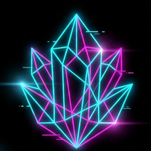

Personnel
The people behind Crystl Labs.
Crew //

Crystl Kim
Spearheading pan-Asian market penetration, enterprise operations, and high-yield portfolio development.
About the studio //
What Crystl Labs is
Crystl Labs is a small independent studio registered as a sole proprietorship in Siheung-si, Gyeonggi-do, South Korea. We build mobile games and utilities for Android, plus a handful of browser tools. There is no outside funding, no publisher and no agency behind any of it, which is why the roster is wide and the release notes are blunt.
How we build
Native Android in Kotlin and Jetpack Compose, with Godot where a game needs a real scene graph. Every project is version controlled from the first commit, and each project page on this site carries its own dev log pulled straight from that history. Twenty-one apps are in the roster: four are live on Google Play, the rest are in playtest or earlier.
Where your data goes
Mostly nowhere. The default for a Crystl Labs app is that your data stays on your device and we hold no copy of it, which is why several of our apps need no account and no server at all. Where an app does send something (crash reports, ads, billing), the privacy policy names it specifically rather than hiding behind a general clause.
Why we write
The blog exists because the interesting parts of this work are the measurements, not the announcements. Posts cover things like framework overhead, garbage collection stalls, quantum optimisation and acoustic positioning. Every number in them comes from a run that was actually made, and corrections are welcome.